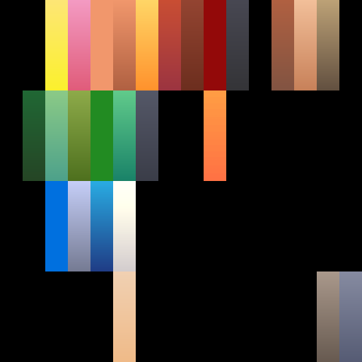

<!doctype html>
<meta charset="utf-8">
<title>Kleurmap-vergelijking</title>
<style>
  html, body { margin: 0; background: #f4f1ea; color: #2a2620;
    font: 15px/1.45 system-ui, -apple-system, "Segoe UI", sans-serif; }
  #blad { width: 1880px; padding: 28px 24px 32px; box-sizing: border-box; }
  h1 { margin: 0 0 4px; font-size: 26px; }
  p.uitleg { margin: 0 0 18px; max-width: 900px; color: #57503f; }
  .atlassen { display: flex; gap: 24px; margin: 0 0 26px; align-items: flex-start; }
  .atlassen figure { margin: 0; }
  .atlassen img { width: 220px; height: 220px; image-rendering: pixelated;
    border: 1px solid #cfc7b4; display: block; }
  figcaption { margin-top: 6px; font-size: 13px; font-weight: 600; }
  .raster { display: grid; grid-template-columns: repeat(4, 1fr); gap: 14px; }
  .kaart { background: #fffdf8; border: 1px solid #ddd5c3; border-radius: 8px;
    padding: 10px 10px 8px; }
  .kaart h2 { margin: 0 0 6px; font-size: 15px; font-weight: 600; }
  .kaart .id { font-weight: 400; color: #8a8271; font-size: 12px; }
  .paar { display: flex; gap: 8px; }
  .paar figure { margin: 0; flex: 1; }
  .paar img { width: 100%; display: block; border-radius: 4px; background: #efece5; }
  .paar figcaption { margin-top: 3px; font-size: 11px; letter-spacing: .04em;
    text-transform: uppercase; color: #8a8271; text-align: center; font-weight: 400; }
</style>
<body>
<div id="blad"></div>
<script>
/* Zet de tegels die render.mjs heeft geschoten in een raster. De inhoud komt
   binnen als window.BLAD; deze pagina rekent niets uit. */
const b = window.BLAD;
document.getElementById('blad').innerHTML = `
  <h1>${b.titel}</h1>
  <p class="uitleg">${b.toelichting} Links de kleuren van vóór de overname, rechts dezelfde modellen
  met de atlas die de kits nu dragen. Model, camera, omgeving en belichting zijn gelijk aan die van
  de catalogus; alleen de atlas verschilt.</p>
  <div class="atlassen">
    <figure><figcaption>voor — colormap-v1.png</figcaption></figure>
    <figure><figcaption>nu — kits/colormap.png</figcaption></figure>
  </div>
  <div class="raster">${b.kaarten.map((k) => `
    <div class="kaart">
      <h2>${k.label} <span class="id">${k.id}</span></h2>
      <div class="paar">
        <figure><figcaption>voor</figcaption></figure>
        <figure><figcaption>nu</figcaption></figure>
      </div>
    </div>`).join('')}</div>`;
</script>
